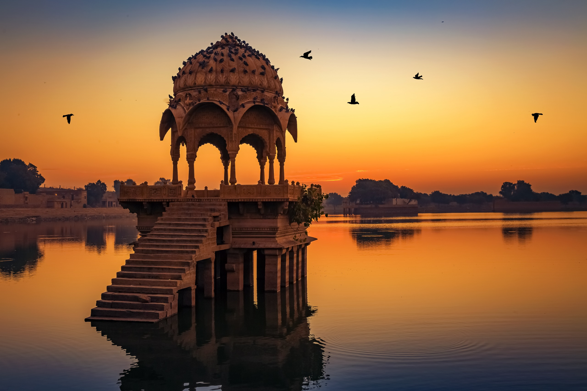

Jaipur India

Jaipur is the largest city in Rajasthan and was built in the eighteenth century by Sawai Jai Singh as India's first planned city. Jaipur is a major tourist attraction amongst Indian as well as international travellers. It belongs to the tourist Golden Triangle of Delhi, Jaipur and Agra. It hosts several attractions like the City Palace, Govind Dev ji Temple, Vidhan Sabha, Birla Temple, several massive Rajput forts and so on. It also serves as a stepping stone for travelers heading to the desert cities of Jodhpur and Jaisalmer.
Now Jaipur is growing fast and various development projects are being undertaken by the government and private enterprises. The town planning and infrastructure development in Jaipur is quite above the mark relative to many other Indian cities.
Jaipur is often called the Pink City in reference to its distinctly colored buildings, which were originally painted this color to imitate the red sandstone architecture of Maugham cities. The present earthy red color originates from repainting of the buildings undertaken for a visit by the Prince of Wales in 1876.

Jaipur gets its name from its founder Maharaja JaiSingh II (1693-1744) the great warrior and astronomer. He came to power at the age of 11 on the death of his father Maharaja Bishan Singh. Jai Singh’s lineage can be traced back to the Kucchwaha Rajput, clan who came to power in the 12th century. They were long-term rivals to the Sisodia Rajputs who ruled from Mewar. This rivalry led them to ally with the Mughals, and this alliance resulted in them eventually gaining a pre-eminent position in Rajasthan.
Forts
Amber Fort-
This massive fort-palace complex built in hybrid Hindu-Muslim style dates back to Raja Man Singh and was the royal palace of the Kachwahas from c. 1600-1727. The name has nothing to do with the rather pretty pastel yellow colour; instead, the fort is named after the town of Amber, in turn named after the goddess Amba.
Aigarh -
Never conquered in battle, this was considered the strongest of the three forts in the area. It is best known as the site of the world's largest cannon, the Jaivana, which was test-fired only once — according to legend, despite using only the half the design amount of gunpowder, the cannonball flew 35 km! A better reason to visit the fort, though, are the scenic gardens at the other end and the spectacular views over the Amber Fort and the hills around.
Palaces
City Palace-
(Inside the old city, close to New Gate and Hawa Mahal). An imposing blend of traditional Rajput and Mughal architecture.
Al Mahal-
(Water Palace), (On the way to Sisodia Rani Garden). A Rajput style architectured palace sits in the center of the Mansarovar lake. The lake is often dry in the winter, but summer monsoons frequently turn it into a beautiful lake filled with water hyacinths. Free on the 18th of May, as well as the Observatory and wind palace.
Temples
Govind Devji Temple -
For Vaishnavites, particularly followers of Lord Krishna, this is the most important temple in the world after Vrindavan. Lord Krishna presiding in the temple were brought to Jaipur from Vrindavan during Mughal rein. According to popular legend, Lord Krishna's idol in the temple looks exactly like Krishna's form while his incarnation of Earth. It is located at Jainiwas Gardens, Jalebi Chowk, in the same campus as City Palace.
Moti Doongri-
temple is located in the center of Jaipur city. This Temple is the main center of religion for Jaipur people. Moti Dungri is basically a small hill, which means Pearl Hill. There is a Temple and a Palace on this hill. Moti Dungri temple is dedicated to Lord Ganesha and it is said that at the time of building this city, this temple was constructed first to protect the city.